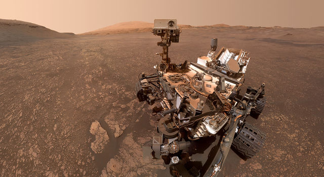
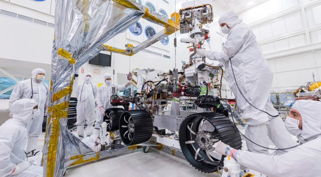
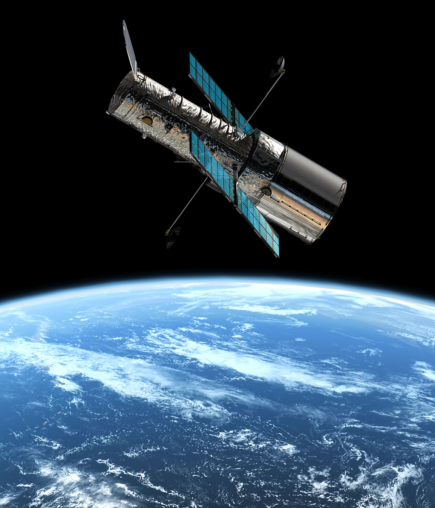

¡Bienvenidos al apasionante mundo de la exploración espacial y los astronautas! En los últimos años, la exploración del espacio ha sido llevada a cabo por una diversa selección de astronautas de diferentes géneros, nacionalidades y profesiones. Estos gráficos nos permitirán entender mejor la diversidad de los astronautas y cómo esto afecta la exploración espacial. Además, nos permitirán apreciar el trabajo duro y dedicación que se requiere para convertirse en astronauta y llevar a cabo misiones en el espacio. ¡Prepárate para adentrarte en el emocionante mundo de los astronautas y la exploración del espacio!
¡Acompáñanos en este emocionante viaje a través de las horas acumuladas de misiones espaciales y descubre cómo la exploración espacial ha sido un campo de batalla y un catalizador para la cooperación entre USA, Rusia y el resto del mundo!
Este gráfico nos permitirá entender mejor la dinámica de selección de los astronautas y cómo esta puede estar relacionada con la experiencia y habilidades adquiridas con la edad. Además, nos permitirá apreciar la dedicación y esfuerzo que se requiere para convertirse en astronauta y llevar a cabo misiones en el espacio, especialmente en la mediana edad.
No todos los astronautas tuvieron el privilegio de viejar mas que una vez, de hecho pare ser un lujo casi exclusivo de los comandantes.
Aunque la exploración espacial ha sido tradicionalmente dominada por hombres, las mujeres también han tenido una presencia significativa en el campo desde inicios de década.
Observa algunos de los gráficos que fuimos desarrollando para poder alcanzar nuestros elementos finales, priorizamos para nuestro contenido final el mensaje de cada gráfico, buscando contar información realmente interesante extraida de los datos recibidos.